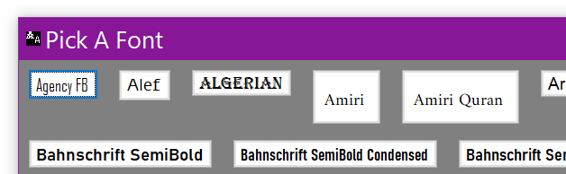
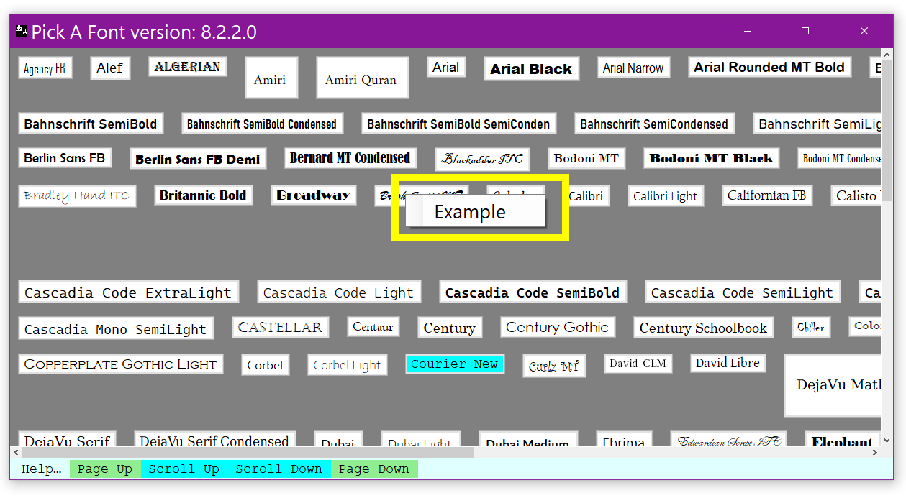
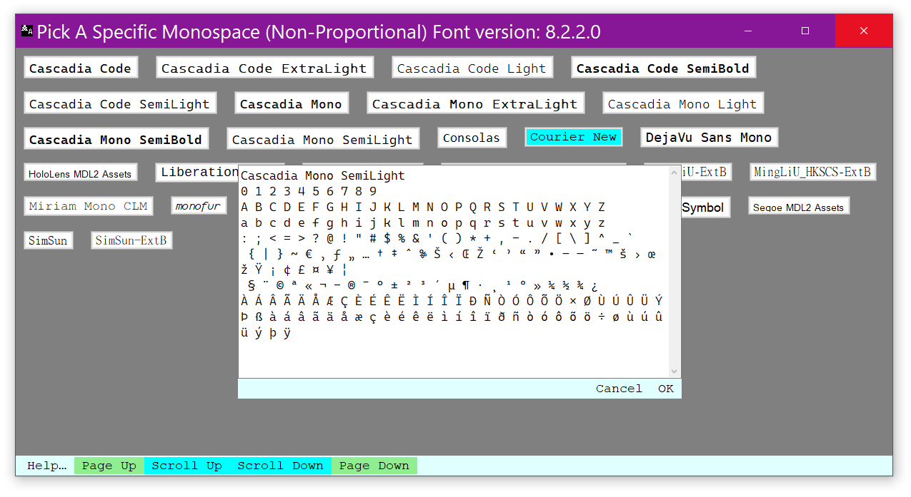
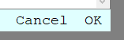
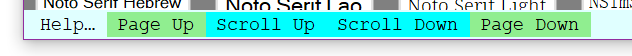

External Font Picker dialog allows the user to specify a specific font from all those installed on the user’s computer.
External Font Picker is a separate application (this is to overcome Dragon’s problem with voice access to the controls of modal dialogs). At launch, this application dynamically queries Windows’ list of installed fonts. A button is created for each font family found installed on the computer. Each button is labeled with font family name and that font family is used to create the text of the button. As an indicator of the currently selected font family its button’s background is painted a light blue.

Note that some of the buttons are much taller than would seem appropriate (on the pictured system, there are a lot of fonts installed). Even though all of these buttons have their text font size set to the same value (12 point) the actual size of the text drawn is controlled by the design definition of the font itself. Additionally, some of these fonts have very tall ascenders — those portions of the letter which would be drawn above the top of an ‘M’ (e.g. ‘Á’). They might also have larger than normal descenders — that portion of the letter which descend “below the line” (e.g. ‘g’ and ‘y’).

With the advent of the “Code” modes, some users might want to restrict their font choice to monospace (non–proportional) fonts.If the requesting module has the ability to do so, External Font Picker can limit the font offerings to just monospace.


Sometimes, just seeing the font family name in its own font is enough to tell the user whether it is the appropriate font for the job. Sometimes it is helpful to see a much larger sample of what letters look like given the choice of font. Each font’s button has a context menu; that menu has a single item “Example” which, when picked, opens up an example panel with all of the ASCII (low and high) and an assortment of Unicode characters.

At the bottom of the examples panel is a menu with two items: “Cancel” and “OK”.
The Cancel menu item hides the examples panel without having any other effect.
The OK menu item closes the External Font Picker and accepts the example font for use in the calling module.

At the bottom of the External Font Picker dialog there are five buttons: “Help…”; “Page Up”; “Scroll Up”; “Scroll Down” and “Page Down”.
The Help… button opens this HTML file in the user’s preferred browser.
The other four buttons allow the page to be scrolled up and down using voice commands.